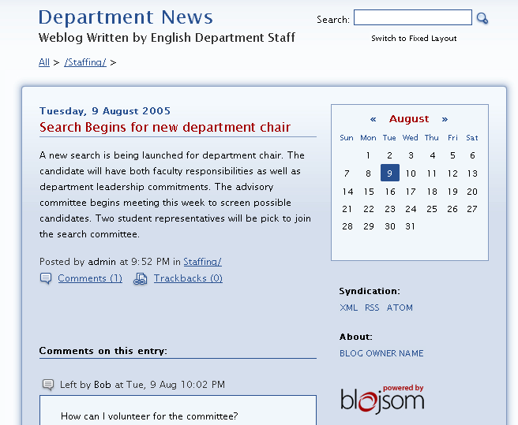

The Blog Portlet allows select individuals to author blogs that can be read and commented upon by the entire campus population.
Viewing Blogs
As a blog reader there are a number of options for viewing information. By default users will be presented with a list of blog entries organized by date within the top-level category of the blog.
To view additional blog entries:
- Click a category name under the Subcategories heading to view blog entries for another subject area.
- To return to the parent category view, click the parent category name listed above the blog entries.
- To view comments for a blog entry, click the Comments link.
- To view Trackbacks for a blog entry, click the Trackback link.
To Search for blog entries:
- Enter word to be search for.
- Click the Search icon.
- Blog entries for all categories matching your search criteria will be displayed. Entries will be sorted by date
To review blog entries for a specific date:
- Navigate to the desired month, using the forward and back icons within the Blog calendar
- Dates for which blog entries exist will be highlighted in the calendar.
- Click a highlighted calendar day to view all blog entries submitted on that date. Entries from all categories and sub-categories will be included in the display.
